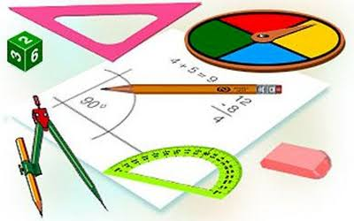

GARIS DAN SUDUT
Kata Pengantar
Pendahuluan
Titik dan Garis
Sudut
Hubungan Garis dan Sudut
Menghitung Jumlah Besar Sudut Pada Segi-n
Daftar Pustaka
Applet Geogebra
Video Pembelajaran
Profil Penulis
GARIS DAN SUDUT

Zakiya Amalia Hartanto Putri
Aan Hendrayana
UNTIRTA PRESS